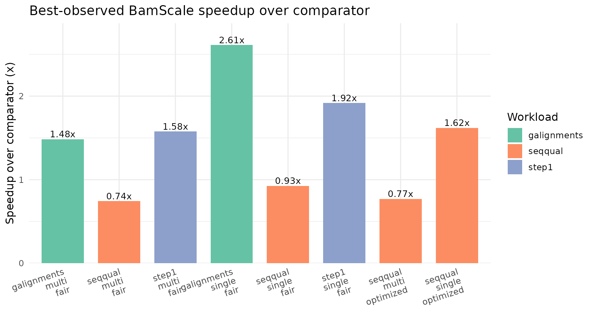
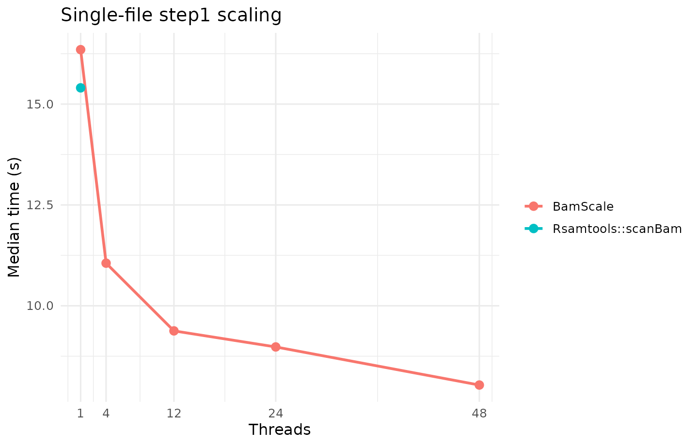
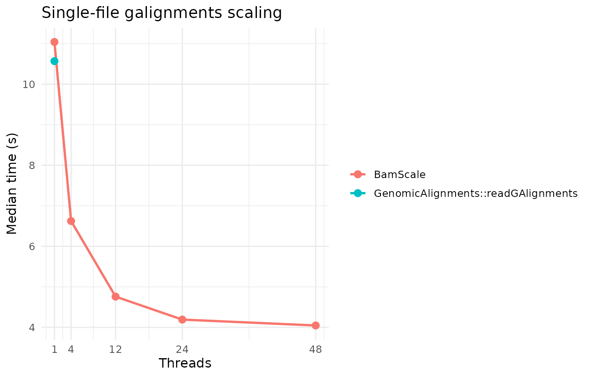
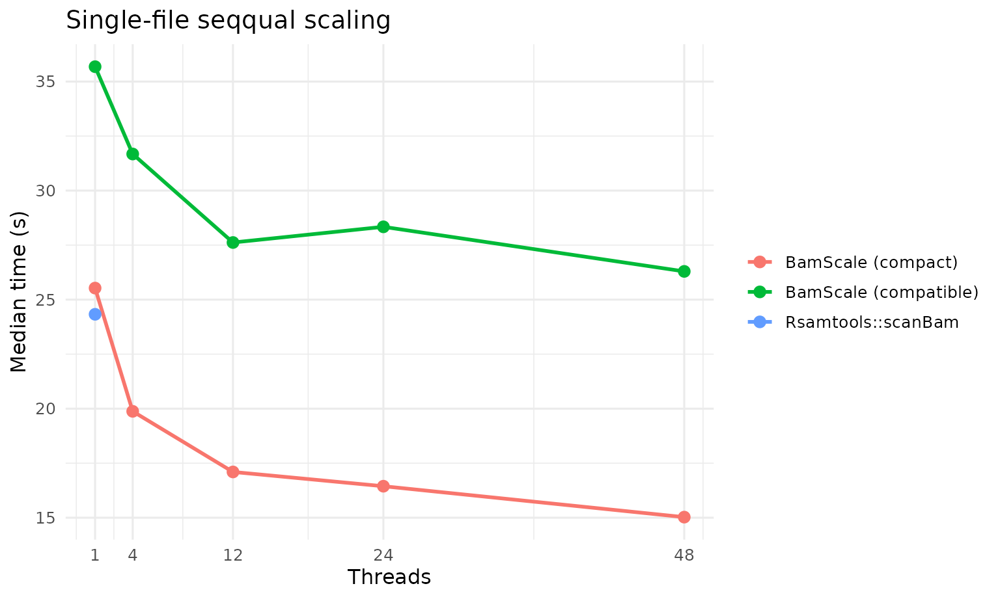
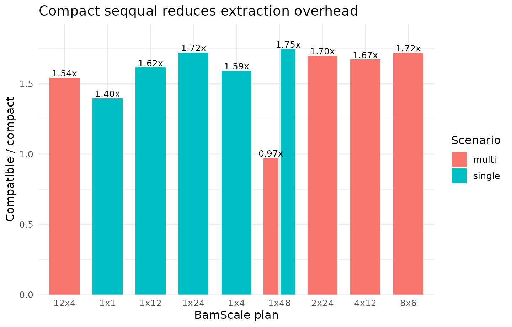

Benchmarking BamScale Across Step1, GAlignments, and SeqQual Workloads
Source:vignettes/benchmark-results.Rmd
benchmark-results.RmdOverview
This article combines the final benchmark runs used for the current BamScale benchmark summary:
-
step1andgalignmentsfrom run_20260320_133141 -
seqqualfrom run_20260320_162359
These runs were generated with the same server-first benchmark
harness, the same balanced profile family, the same deterministic case
order, and the same worker/thread budget policy. Seqqual is
reported separately because it includes both the fair compatibility
track and the optimized compact track.
Benchmark Provenance
- Step1 and GAlignments run: run_20260320_133141
- SeqQual run: run_20260320_162359
- Step1/GAlignments results directory: /home/runner/work/BamScale/BamScale/inst/benchmarks/run_20260320_133141
- SeqQual results directory: /home/runner/work/BamScale/BamScale/inst/benchmarks/run_20260320_162359
| Run | Workloads | Profile | CPU | Logical cores | RAM (GB) | Successful cases |
|---|---|---|---|---|---|---|
| run_20260320_133141 | step1, galignments | balanced | Intel(R) Xeon(R) Gold 6252 CPU @ 2.10GHz | 96 | 723.6 | 32 |
| run_20260320_162359 | seqqual | balanced | Intel(R) Xeon(R) Gold 6252 CPU @ 2.10GHz | 96 | 723.6 | 26 |
Methods Rationale
This benchmark suite covers three distinct access patterns:
-
step1: alignment-metadata extraction without sequence/quality materialization. This is a good proxy for BAM filtering, fragment-length profiling, and fragment-distribution QC. -
galignments: construction of alignment objects suitable for Bioconductor workflows centered onGenomicAlignments. -
seqqual: full sequence and quality extraction. This is reported in two BamScale modes:-
faircompatibility mode, which is the closest comparator toRsamtools::scanBam -
optimizedcompact mode, which reduces internal overhead and should be interpreted as an optimized BamScale track rather than a strict apples-to-apples replacement for the compatibility path
-
Across all runs, the benchmark design emphasizes:
- deterministic case order
- balanced BamScale worker/thread plans
- explicit comparator baselines
- single-file and multi-file reporting
- fixed 48-thread budget for multi-file plans
Input Files
The same underlying four selected BAMs were used for both runs, with repeated files allowed to populate the 12-file multi-file benchmark set.
| file | source | selected_for_single | selected_for_multi | size_mb | has_index |
|---|---|---|---|---|---|
| /home/chiragp/.cache/R/ExperimentHub/134ab745547e62_2073 | chipseqDBData | TRUE | TRUE | 548.3 | TRUE |
| /home/chiragp/.cache/R/ExperimentHub/134ab7270c5da5_2072 | chipseqDBData | FALSE | TRUE | 320.4 | TRUE |
| /home/chiragp/.cache/R/ExperimentHub/134ab721bfa655_2071 | chipseqDBData | FALSE | TRUE | 305.2 | TRUE |
| /home/chiragp/.cache/R/ExperimentHub/134ab7231ef47d_2074 | chipseqDBData | FALSE | TRUE | 227.3 | TRUE |
Reference Counts
| run | scenario | workload | n_files | n_records | total_mb |
|---|---|---|---|---|---|
| run_20260320_133141 | multi | galignments | 12 | 77543925 | 4203.4 |
| run_20260320_133141 | multi | step1 | 12 | 132482148 | 4203.4 |
| run_20260320_133141 | single | galignments | 1 | 4670364 | 548.3 |
| run_20260320_133141 | single | step1 | 1 | 16675372 | 548.3 |
| run_20260320_162359 | multi | seqqual | 12 | 132482148 | 4203.4 |
| run_20260320_162359 | single | seqqual | 1 | 16675372 | 548.3 |
Best-Observed Summary
| Scenario | Workload | Track | Method family | Method | Plan | Median time (s) |
|---|---|---|---|---|---|---|
| multi | galignments | fair | BamScale | BamScale (balanced budget) | 1x48 | 61.204 |
| multi | galignments | fair | GenomicAlignments | GenomicAlignments::readGAlignments + BiocParallel | 12x1 | 90.777 |
| multi | seqqual | fair | BamScale | BamScale (balanced budget) | 1x48 | 181.277 |
| multi | seqqual | fair | Rsamtools | Rsamtools::scanBam + BiocParallel | 12x1 | 134.667 |
| multi | seqqual | optimized | BamScale | BamScale (compact seqqual budget) | 12x4 | 175.451 |
| multi | step1 | fair | BamScale | BamScale (balanced budget) | 1x48 | 68.469 |
| multi | step1 | fair | Rsamtools | Rsamtools::scanBam + BiocParallel | 12x1 | 107.882 |
| single | galignments | fair | BamScale | BamScale | 1x48 | 4.047 |
| single | galignments | fair | GenomicAlignments | GenomicAlignments::readGAlignments | 1x1 | 10.568 |
| single | seqqual | fair | BamScale | BamScale | 1x48 | 26.295 |
| single | seqqual | fair | Rsamtools | Rsamtools::scanBam | 1x1 | 24.327 |
| single | seqqual | optimized | BamScale | BamScale (compact seqqual) | 1x48 | 15.026 |
| single | step1 | fair | BamScale | BamScale | 1x48 | 8.035 |
| single | step1 | fair | Rsamtools | Rsamtools::scanBam | 1x1 | 15.403 |
BamScale-versus-Comparator Fold Change
| Scenario | Workload | Track | Comparator family | Comparator method | Comparator plan | Comparator time (s) | BamScale method | BamScale plan | BamScale time (s) | Comparator/BamScale | BamScale % faster |
|---|---|---|---|---|---|---|---|---|---|---|---|
| single | galignments | fair | GenomicAlignments | GenomicAlignments::readGAlignments | 1x1 | 10.568 | BamScale | 1x48 | 4.047 | 2.611 | 61.705 |
| single | step1 | fair | Rsamtools | Rsamtools::scanBam | 1x1 | 15.403 | BamScale | 1x48 | 8.035 | 1.917 | 47.835 |
| multi | galignments | fair | GenomicAlignments | GenomicAlignments::readGAlignments + BiocParallel | 12x1 | 90.777 | BamScale (balanced budget) | 1x48 | 61.204 | 1.483 | 32.578 |
| multi | step1 | fair | Rsamtools | Rsamtools::scanBam + BiocParallel | 12x1 | 107.882 | BamScale (balanced budget) | 1x48 | 68.469 | 1.576 | 36.534 |
| single | seqqual | fair | Rsamtools | Rsamtools::scanBam | 1x1 | 24.327 | BamScale | 1x48 | 26.295 | 0.925 | -8.088 |
| single | seqqual | optimized | Rsamtools | Rsamtools::scanBam | 1x1 | 24.327 | BamScale (compact seqqual) | 1x48 | 15.026 | 1.619 | 38.232 |
| multi | seqqual | fair | Rsamtools | Rsamtools::scanBam + BiocParallel | 12x1 | 134.667 | BamScale (balanced budget) | 1x48 | 181.277 | 0.743 | -34.611 |
| multi | seqqual | optimized | Rsamtools | Rsamtools::scanBam + BiocParallel | 12x1 | 134.667 | BamScale (compact seqqual budget) | 12x4 | 175.451 | 0.768 | -30.285 |

Single-File step1

| Method family | Method | Plan | Median time (s) |
|---|---|---|---|
| BamScale | BamScale | 1x48 | 8.0350 |
| BamScale | BamScale | 1x24 | 8.9795 |
| BamScale | BamScale | 1x12 | 9.3775 |
| BamScale | BamScale | 1x4 | 11.0565 |
| Rsamtools | Rsamtools::scanBam | 1x1 | 15.4030 |
| BamScale | BamScale | 1x1 | 16.3500 |
Single-File galignments

| Method family | Method | Plan | Median time (s) |
|---|---|---|---|
| BamScale | BamScale | 1x48 | 4.0470 |
| BamScale | BamScale | 1x24 | 4.1920 |
| BamScale | BamScale | 1x12 | 4.7585 |
| BamScale | BamScale | 1x4 | 6.6230 |
| GenomicAlignments | GenomicAlignments::readGAlignments | 1x1 | 10.5680 |
| BamScale | BamScale | 1x1 | 11.0405 |
Single-File seqqual

| Method | Plan | Median time (s) |
|---|---|---|
| BamScale (compact) | 1x48 | 15.0265 |
| BamScale (compact) | 1x24 | 16.4440 |
| BamScale (compact) | 1x12 | 17.0985 |
| BamScale (compact) | 1x4 | 19.8780 |
| Rsamtools::scanBam | 1x1 | 24.3275 |
| BamScale (compact) | 1x1 | 25.5300 |
| BamScale (compatible) | 1x48 | 26.2950 |
| BamScale (compatible) | 1x12 | 27.6200 |
| BamScale (compatible) | 1x24 | 28.3390 |
| BamScale (compatible) | 1x4 | 31.6780 |
| BamScale (compatible) | 1x1 | 35.6830 |
Compact-versus-Compatible seqqual
| Scenario | Workload | Plan | Compatible time (s) | Compact time (s) | Compatible/Compact |
|---|---|---|---|---|---|
| multi | seqqual | 1x48 | 181.277 | 186.321 | 0.973 |
| multi | seqqual | 2x24 | 573.752 | 337.596 | 1.700 |
| multi | seqqual | 4x12 | 404.183 | 241.524 | 1.673 |
| multi | seqqual | 8x6 | 361.750 | 210.290 | 1.720 |
| multi | seqqual | 12x4 | 270.889 | 175.451 | 1.544 |
| single | seqqual | 1x1 | 35.683 | 25.530 | 1.398 |
| single | seqqual | 1x4 | 31.678 | 19.878 | 1.594 |
| single | seqqual | 1x12 | 27.620 | 17.098 | 1.615 |
| single | seqqual | 1x24 | 28.339 | 16.444 | 1.723 |
| single | seqqual | 1x48 | 26.295 | 15.026 | 1.750 |

Interpretation
The benchmark shows a consistent pattern across the final runs:
-
step1andgalignmentsare the strongest BamScale workloads. - For these workloads, the best BamScale plans are usually low-worker, high-thread configurations, indicating that within-file multithreading contributes more than aggressively increasing the number of file workers.
-
Seqqualis more difficult because sequence and quality extraction amplifies output-construction overhead. - BamScale compact mode narrows this gap substantially and produces
the strongest single-file
seqqualresult, but the best multi-fileseqqualcomparator remains faster.
In practical terms, these results support the following guidance:
- use BamScale when metadata extraction or alignment-object construction is a bottleneck in BAM-heavy Bioconductor workflows
- favor low-worker, high-thread plans when traversing one or a small number of large BAM files
- interpret compact
seqqualas an optimized throughput path rather than as a strict compatibility benchmark
Session Information
## R version 4.5.3 (2026-03-11)
## Platform: x86_64-pc-linux-gnu
## Running under: Ubuntu 24.04.4 LTS
##
## Matrix products: default
## BLAS: /usr/lib/x86_64-linux-gnu/openblas-pthread/libblas.so.3
## LAPACK: /usr/lib/x86_64-linux-gnu/openblas-pthread/libopenblasp-r0.3.26.so; LAPACK version 3.12.0
##
## locale:
## [1] LC_CTYPE=C.UTF-8 LC_NUMERIC=C LC_TIME=C.UTF-8
## [4] LC_COLLATE=C.UTF-8 LC_MONETARY=C.UTF-8 LC_MESSAGES=C.UTF-8
## [7] LC_PAPER=C.UTF-8 LC_NAME=C LC_ADDRESS=C
## [10] LC_TELEPHONE=C LC_MEASUREMENT=C.UTF-8 LC_IDENTIFICATION=C
##
## time zone: UTC
## tzcode source: system (glibc)
##
## attached base packages:
## [1] stats graphics grDevices utils datasets methods base
##
## other attached packages:
## [1] scales_1.4.0 ggplot2_4.0.2 tidyr_1.3.2 dplyr_1.2.1
## [5] readr_2.2.0 BiocStyle_2.38.0
##
## loaded via a namespace (and not attached):
## [1] bit_4.6.0 gtable_0.3.6 jsonlite_2.0.0
## [4] crayon_1.5.3 compiler_4.5.3 BiocManager_1.30.27
## [7] tidyselect_1.2.1 parallel_4.5.3 jquerylib_0.1.4
## [10] systemfonts_1.3.2 textshaping_1.0.5 yaml_2.3.12
## [13] fastmap_1.2.0 R6_2.6.1 labeling_0.4.3
## [16] generics_0.1.4 knitr_1.51 tibble_3.3.1
## [19] bookdown_0.46 desc_1.4.3 RColorBrewer_1.1-3
## [22] bslib_0.10.0 pillar_1.11.1 tzdb_0.5.0
## [25] rlang_1.2.0 cachem_1.1.0 xfun_0.57
## [28] S7_0.2.1-1 fs_2.1.0 sass_0.4.10
## [31] bit64_4.6.0-1 cli_3.6.6 withr_3.0.2
## [34] pkgdown_2.2.0 magrittr_2.0.5 digest_0.6.39
## [37] grid_4.5.3 vroom_1.7.1 hms_1.1.4
## [40] lifecycle_1.0.5 vctrs_0.7.3 evaluate_1.0.5
## [43] glue_1.8.1 farver_2.1.2 ragg_1.5.2
## [46] rmarkdown_2.31 purrr_1.2.2 tools_4.5.3
## [49] pkgconfig_2.0.3 htmltools_0.5.9